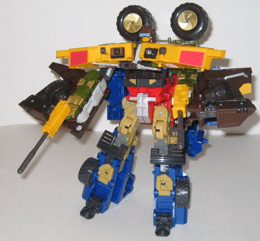
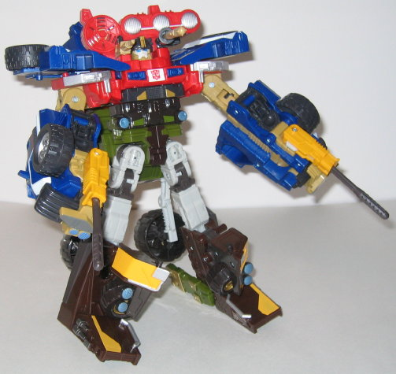

Vehicle mode is a dune
buggy/sand rail. This mode is fairly cool, for the most part; the mold
detailing and overall proportions are very nice, and he's got enough paint
detailing to go around. A nice little "extra" decoration on Cliffjumper
is the set of miniature wings he's got above his engine, but it tends to
hover a bit away from the rest of the parts- maybe making the piece that
is connecting it to the main body of the vehicle a little shorter would
have alleviated this rather unique problem. Cliffjumper's got a big, honkin'
engine on the rear of his vehicle mode, and it certainly looks impressive.
Its silver coloration actually a spray-painted paint app rather than a
solid one, giving it a bit of a "worn" look. If you press the small, gray
button on top of the engine, you'll get Cliffjumper's lone sound effect-
a rather loud, long "engine whirring" noise that sounds like Cliffjumper
is speeding towards the listener and then zooming off. It's overall a nice
sound effect for this mode, although it can be triggered accidentally during
transformation. A few other paint apps I like are the silver bumper and
the silver-bluish front headlights- they're really eye-catching against
the dark brown. Next to the windows, Cliffjumper also has four more miniature
headlights- if he needs to work in the dark, I suppose. Cliffjumper also
has two standard missile launchers connected to the front of this mode
(which become hand-held launchers in robot mode). The real problem I have
with this mode, though, is the actual colors of the cockpit and its windows.
The yellow used, although not bright, really doesn't fit in with Cliffjumper's
otherwise military-esque color scheme, and looks completely out of place.
The light red painted windows also look very ugly, and just make him look
too toyish. If only those two coloration problems had been fixed, this
would have been an awesome vehicle mode, but now it's just "good". No robot
extras are visible in this mode at all, though, which is a plus.
Cliffjumper's robot
mode is also pretty good, and definitely has an original look to it. It
also becomes apparent that he's huge for a Mega- in fact, Hasbro could
easily pass him off as an Ultra if they really wanted to. His only real
vehicle "extras" in this mode are his "backpack", which has his rear wheels
on top of it, and the halves of his cockpit used as his shoulders, but
these both complement the mode and give it some originality rather than
detract from it. The miniature wings from the vehicle mode have become
a very stylin' breastplate for Cliffjumper, and they aren't big enough
to get in the way of any movement, so I like 'em. Cliffjumper's head sculpt
is also great- it looks like he's got some goggles on for "eye protection"
as he drives through all that sand. He also has the jutting "chin-mouthplate"
that seems to have gotten more popular recently with such characters as
Tidal Wave
and
Bulkhead
.
What I'm not too fond of, however, are Cliffjumper's legs- the upper legs
are entirely too small when compared to the huuuge lower feet that he has.
Granted, he has plenty of stability, but it looks a little silly. Not to
mention that his Powerlinx mode hands are easily visible on the sides of
his legs. His shoulder-cockpit halves are also at an angle that is slighty
off from where they should be, due to the angle of the cockpit itself.
As such, it always looks like you don't have his shoulders compltely unfolded,
even though you do. Cliffjumper has pretty good articulation, though- he
can move at the head, the shoulders (at three points), the elbows, the
hips (at two points), and the knees (at two points). So you can get him
into a pretty good number of poses. Cliffjumper's Autobot spark crystal
is on the top of his left shoulder (his lone Powerlinx point is in the
same place on the right shoulder), and his gold Powerlinx symbol is on
his right arm.


As the top half of a
Powerlinx robot, Cliffjumper looks pretty odd, although at least he doesn't
have many extras hanging off his back. His hands are just small parts on
his otherwise huge regular robot mode legs, though, so they look really
stupid, and his cockpit halfs actually sitting in their particular position
on his chest looks kinda odd- almost like he has an overly large bowtie
on. He still has good arm articulation, so I suppose that's a plus.
Cliffjumper definitely
works better as the bottom half of a Powerlinx robot, though. He only has
a few more back-extras than he did as the upper half, but his main body
doesn't look unwieldy at all, and his large feet now look more proportional
on a larger robot. He also gives the Powerlinx robot good leg articulation
and fairly good stability.
Given that his wave-mate was a new version of the super-popular G1 character Shockwave, Cliffjumper has been largely ignored by a lot of the fandom, and that's too bad, because he really is one of the best deluxe- or mega-sized Powerlinking Autobots in the Energon line. Although he does have a few flaws, such as his odd-colored vehicle mode windows and large lower legs in robot mode, he's a pretty solid toy overall. And although his upper Powerlinx mode looks pretty odd, he makes a solid lower half. He's a pretty good Transformer, and I'd recommend him to any Autobot fan.
Review by Beastbot